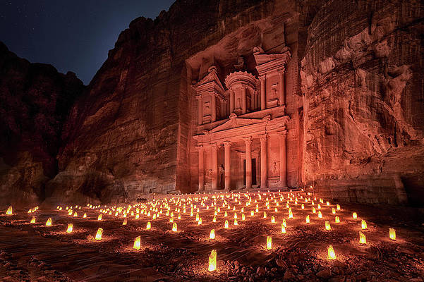

Petra is a historical and archaeological city located in southern Jordan. It is known for its stunning rock-cut architecture and its status as a UNESCO World Heritage Site.
One of the most iconic features of Petra is the Treasury, which is a massive rock-cut building that was likely used as a tomb. The building is intricately carved and features a number of columns and statues. Another popular feature of Petra is the Monastery, which is a similar rock-cut building that is located at the top of a mountain. Visitors can climb the mountain to reach the Monastery, and the views from the top are absolutely breathtaking. In addition to these iconic buildings, Petra also features a number of other rock-cut structures, including tombs, temples, and houses. The city also has a number of hiking trails that visitors can explore, including the Al Khubtha Trail, which offers stunning views of the Treasury .Another option is the Petra Night Tour, which allows visitors to explore the city by candlelight and experience the ancient city in a whole new way.
Petra is a must-visit destination for anyone interested in history, architecture, or hiking. The city is truly one of a kind, and its unique rock-cut buildings and stunning natural surroundings make it a truly unforgettable experience.
Petra is a popular tourist destination, so there are a number of hotels and resorts in the area. One popular choice is the Petra Marriott Hotel, which is located just a few minutes from the entrance to Petra. The hotel features a number of great amenities, including a swimming pool, a fitness center, and several restaurants.
Another popular choice is the Movenpick Resort Petra, which is located right next to the entrance to Petra. The resort features a number of great amenities, including a spa, a swimming pool, and several restaurants. Many visitors also enjoy staying in one of the many guesthouses in the area, which offer a more authentic experience and are often run by local families.
As for things to do in Petra, there is no shortage of activities. Of course, the main attraction is the ancient city itself, which is full of stunning rock-cut buildings and structures. Visitors can spend hours exploring the city, taking in the intricate carvings and stunning architecture.
